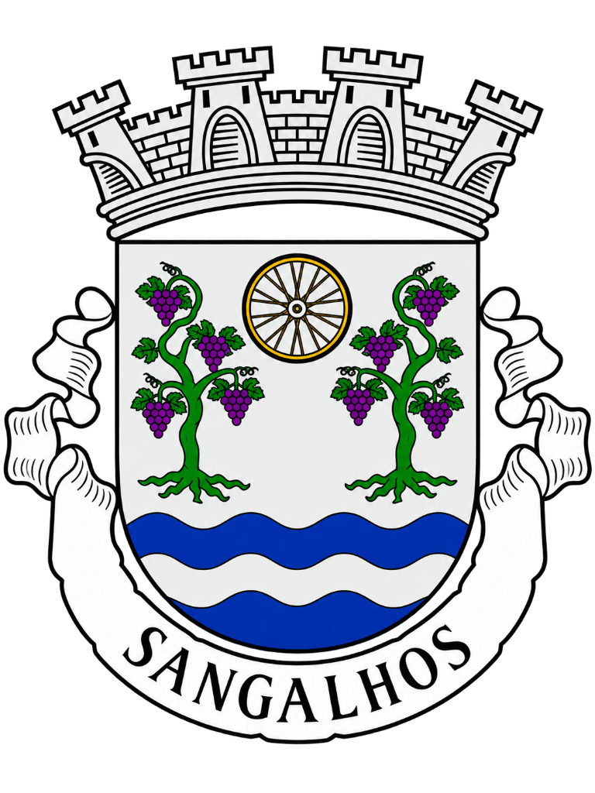

Concelho de Anadia
Sangalhos
Informações de Sangalhos do Partido CHEGA.
Mandato Autárquico 2025–2029
Representação Autárquica
[ Nome a Designar ]
Assembleia de Freguesia
Informações de Sangalhos do Partido CHEGA.

Assembleia de Freguesia